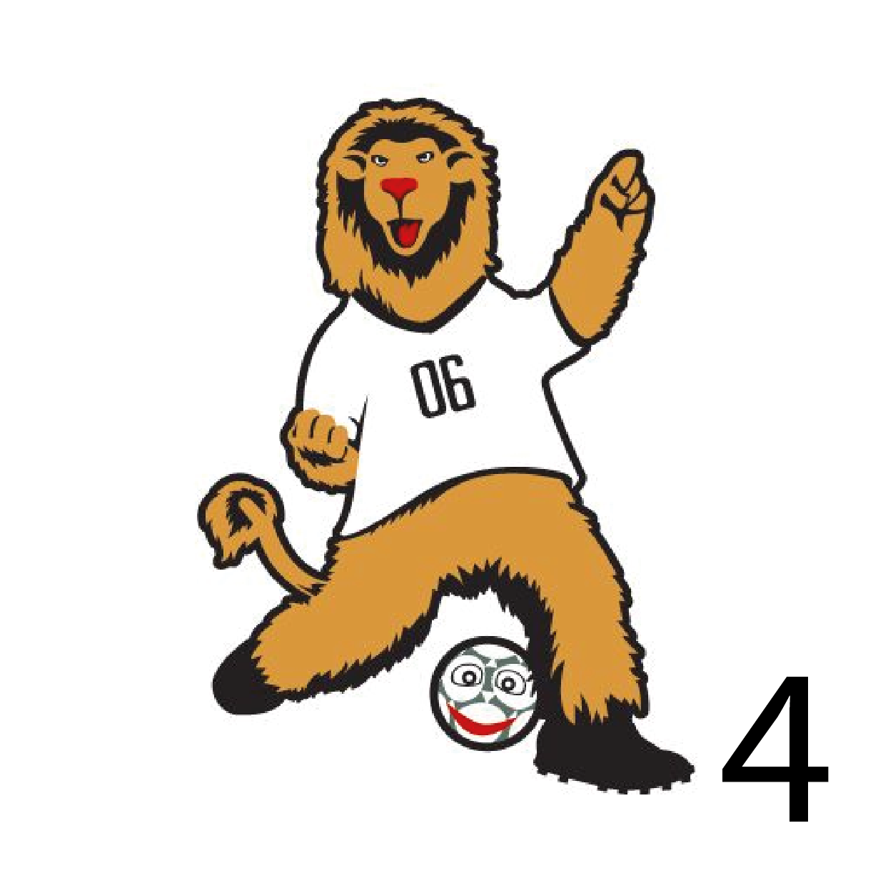
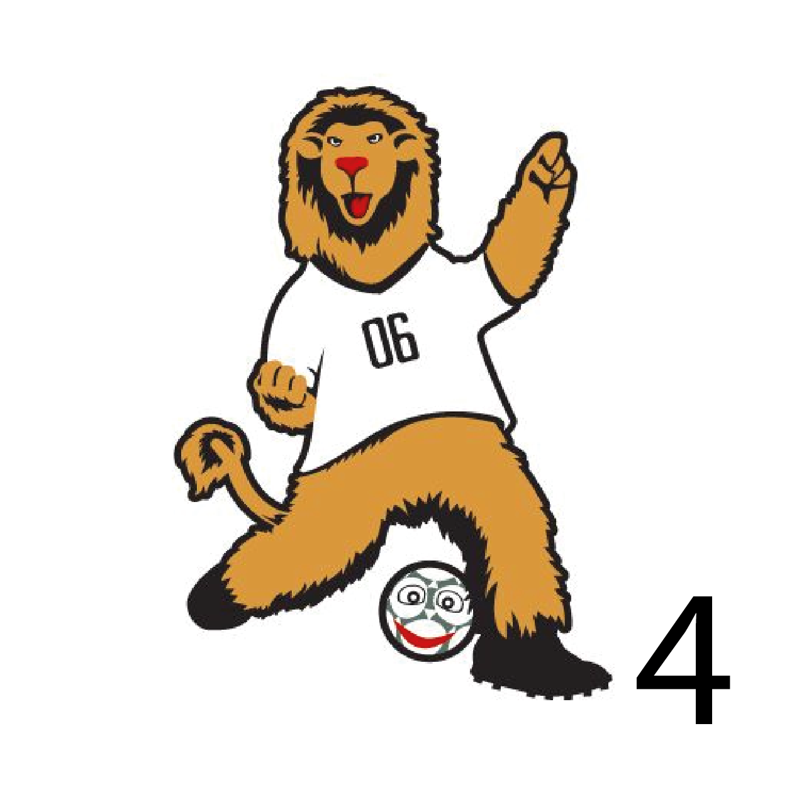
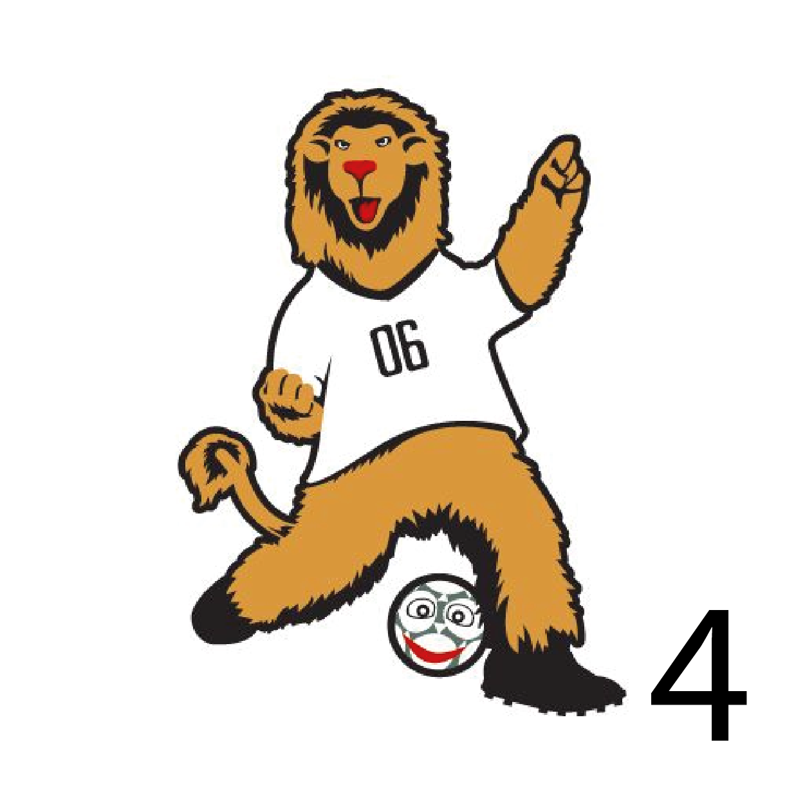
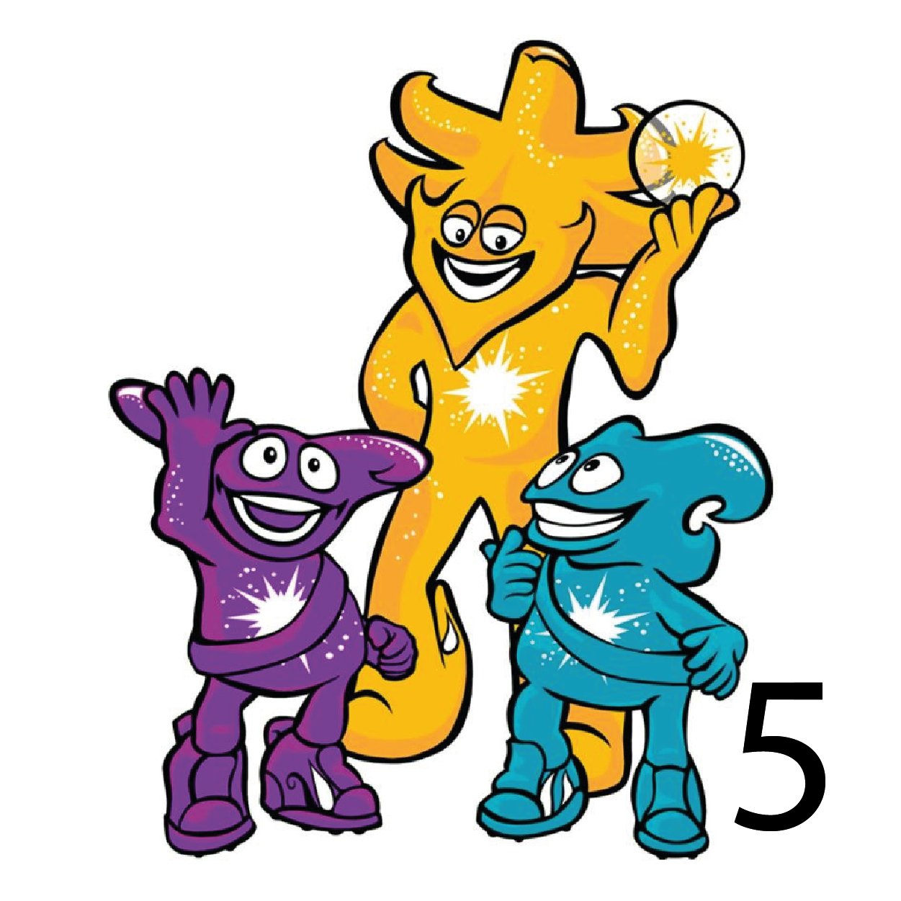
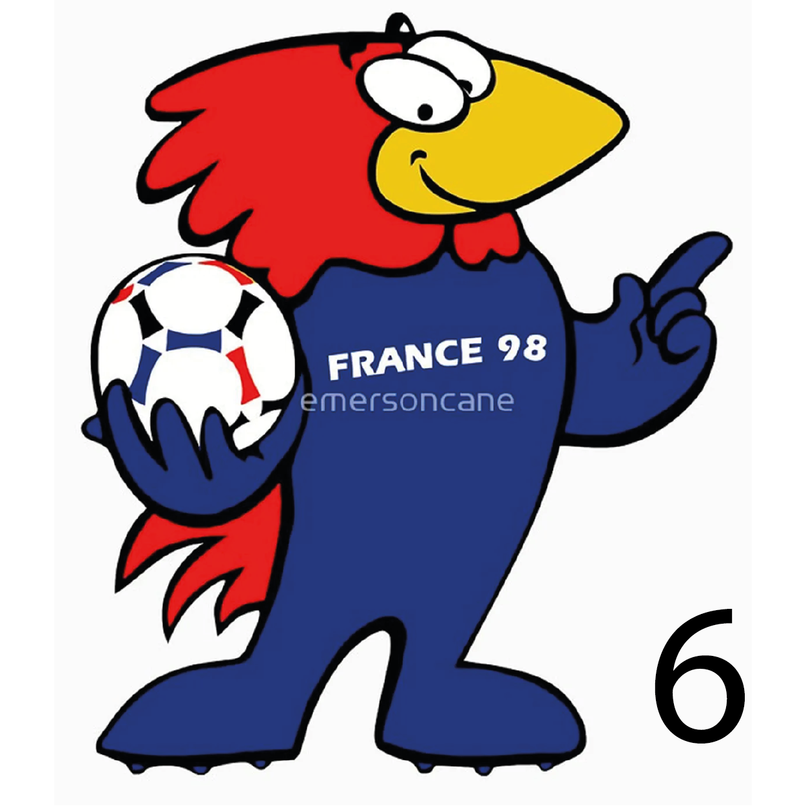
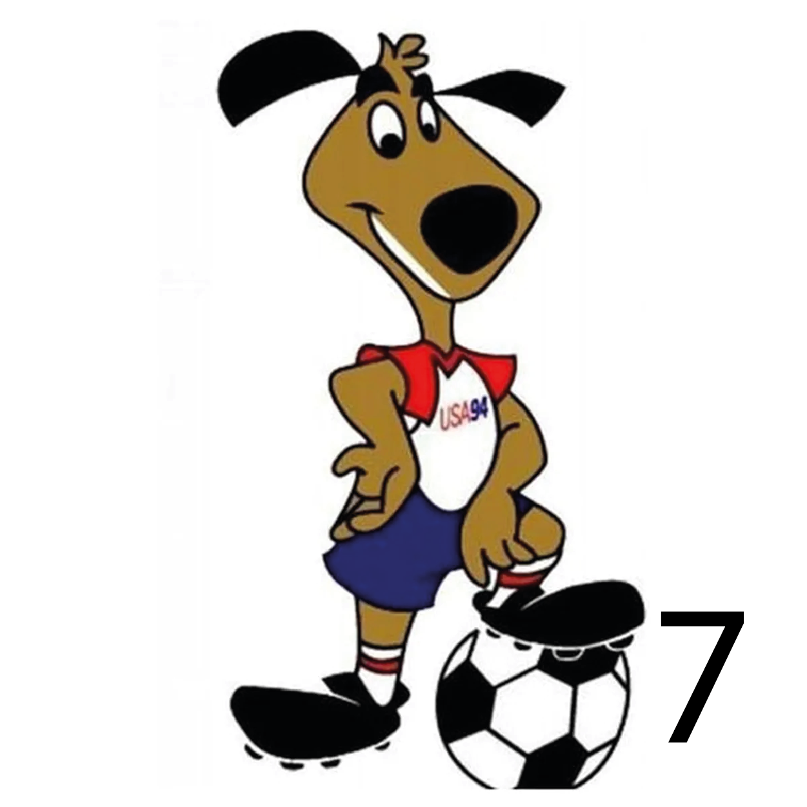
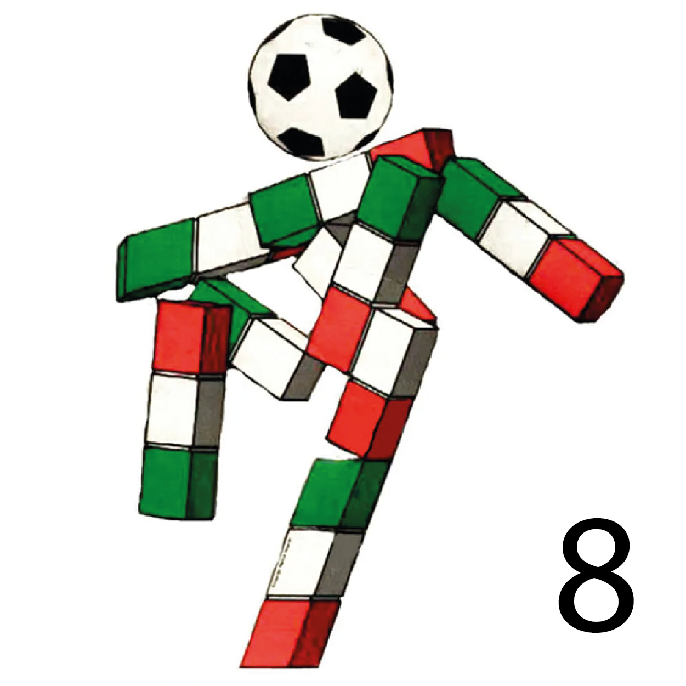

knowing the history
Each Soccer World Cup has had its own mascot since 1966, as a way of representing the tournament. Usually, it becomes one of the main symbols of each tournament, along with the logo and motto.
The first official mascot of a World Cup was World Cup Willie, an anthropomorphic lion created for the 1966 edition held in England.1 It was also one of the first mascots associated with a major sporting event. Previously, different teams used some symbols similar to a mascot and in the 1958 editions in Sweden and the 1962 editions in Chile there are records of an associated mascot that represented a child soccer player, dressed respectively as a Swedish and a huaso, but they were not official.
The design of the mascot generally represents characteristics of the host country, such as its customs, clothing, flora or fauna. Usually, they adopt anthropomorphic forms of animals that allow the mascot to become toys and stuffed animals, becoming one of the main merchandising products for tournaments, directing sales especially towards the children's market. Although there are mascots for the vast majority of world tournaments (and even for lower-ranking continental events), it is the absolute men's soccer tournament where mascots have the greatest commercial impact.
discovering the mascots (2018 to 1990)

discovering the mascots (2018 to 1990)
discovering the mascots (2018 to 1990)



